library(tidyverse)
library(janitor)
library(lme4)
library(lmerTest)
library(rstatix)
library(ggplot2)
library(readxl)
library(hms)
dados <- read_xlsx("Dados_06.07.xlsx") %>% clean_names() %>%
type.convert(as.is = TRUE) %>% drop_na(codigo) |> select(-c(
maratona_pace_km1,
maratona_fc_km1,
maratona_percent_vc_fc,
starts_with("fazer_as"))) |> mutate(maratona_tempo = as.double(maratona_tempo),
maratona_tempo = as_hms(maratona_tempo * 86400),
maratona_tempo = format(as.POSIXct(maratona_tempo), "%H:%M:%S"),
maratona_menos_4h = ifelse(as_hms(maratona_tempo) < as_hms("04:00:00"), "menos de 4h", "4h ou mais"))
dicionario <- read_excel("Dados_06.07.xlsx", sheet = 2) Análise exploratória dos dados - Movimenta UFPR
Estrutura dos dados
Quantidade de atletas:
nrow(dados) [1] 30Número de variáveis:
ncol(dados)[1] 237Primeiras 6 linhas dos dados:
head(dados)# A tibble: 6 × 237
grupo codigo nome maratona_tempo maratona_km_h_real tt_3_tempo tt_3_km_h_real
<chr> <chr> <chr> <chr> <dbl> <chr> <dbl>
1 G1 G1_01 Alci… 04:17:01 9.85 8.4560185… 10.4
2 G1 G1_02 Ales… 03:44:04 11.3 6.8275462… 12.9
3 G1 G1_03 Aman… 04:08:30 10.2 8.1493055… 10.8
4 G1 G1_04 Ana … 03:00:28 14.0 5.8611111… 15
5 G1 G1_05 Andr… 04:35:19 9.19 7.7187500… 11.4
6 G1 G1_06 Carl… 03:41:48 11.4 7.3888888… 11.9
# ℹ 230 more variables: tt_2_tempo <chr>, tt_2_km_h_real <dbl>,
# tt_1_tempo <chr>, tt_1_km_h_real <dbl>, z1_2_tempo <chr>,
# z1_2_km_h_real <dbl>, z1_1_tempo <chr>, z1_1_km_h_real <dbl>,
# t1000_s12_tempo_real <int>, t1000_s12_km_h <dbl>, t1000_s12_pace <chr>,
# t2000_s12_tempo_real <int>, t2000_s12_km_h <dbl>, t2000_s12_pace <chr>,
# t3000_s12_tempo_real <int>, t3000_s12_km_h <dbl>, t3000_s12_pace <chr>,
# vc_s12_real <dbl>, d_s12_real <dbl>, r_s12 <dbl>, rmse_s12 <dbl>, …Variáveis e seus tipos:
glimpse(dados)Rows: 30
Columns: 237
$ grupo <chr> "G1", "G1", "G1", "G1", "G1", "G1", "G1", "G1"…
$ codigo <chr> "G1_01", "G1_02", "G1_03", "G1_04", "G1_05", "…
$ nome <chr> "Alcione", "Alessandro", "Amanda", "Ana Munaro…
$ maratona_tempo <chr> "04:17:01", "03:44:04", "04:08:30", "03:00:28"…
$ maratona_km_h_real <dbl> 9.85, 11.30, 10.19, 14.03, 9.19, 11.41, 12.95,…
$ tt_3_tempo <chr> "8.4560185185185183E-2", "6.8275462962962968E-…
$ tt_3_km_h_real <dbl> 10.40, 12.88, 10.79, 15.00, 11.39, 11.90, 14.1…
$ tt_2_tempo <chr> "1899-12-31 02:08:00", "1899-12-31 01:47:25", …
$ tt_2_km_h_real <dbl> 9.89, 11.79, 10.29, 14.72, 11.08, 10.93, 13.87…
$ tt_1_tempo <chr> "1899-12-31 02:11:10", "1899-12-31 01:49:06", …
$ tt_1_km_h_real <dbl> 9.65, 11.60, 10.61, 14.10, 10.55, 9.06, 12.17,…
$ z1_2_tempo <chr> "1899-12-31 02:10:21", "1899-12-31 01:47:25", …
$ z1_2_km_h_real <dbl> 9.71, 11.79, 10.29, 12.57, 10.36, 9.71, 12.18,…
$ z1_1_tempo <chr> "1899-12-31 02:14:00", "1899-12-31 01:54:32", …
$ z1_1_km_h_real <dbl> 9.45, 11.05, 9.36, 12.20, 10.54, 9.42, 11.27, …
$ t1000_s12_tempo_real <int> 265, 258, 281, 191, 271, 248, 199, 237, 204, 1…
$ t1000_s12_km_h <dbl> 13.33, 13.95, 12.81, 18.85, 13.28, 14.52, 18.0…
$ t1000_s12_pace <chr> "1899-12-31 04:25:00", "1899-12-31 04:18:00", …
$ t2000_s12_tempo_real <int> 595, 528, 617, 419, 555, 570, 432, 531, 457, 4…
$ t2000_s12_km_h <dbl> 12.10, 13.64, 11.67, 17.18, 12.97, 12.63, 16.6…
$ t2000_s12_pace <chr> "1899-12-31 04:58:00", "1899-12-31 04:24:00", …
$ t3000_s12_tempo_real <int> 927, 810, 848, 657, 855, 849, 655, 805, 704, 6…
$ t3000_s12_km_h <dbl> 11.65, 13.33, 12.74, 16.44, 12.63, 12.72, 16.4…
$ t3000_s12_pace <chr> "1899-12-31 05:09:00", "1899-12-31 04:30:00", …
$ vc_s12_real <dbl> 11.44, 13.40, 12.60, 15.40, 12.30, 12.40, 16.4…
$ d_s12_real <dbl> 114.00, 72.80, 33.80, 182.10, 75.40, 171.80, 8…
$ r_s12 <dbl> 0.99980, 0.99984, 0.99786, 0.99996, 0.99992, 0…
$ rmse_s12 <dbl> 4.0, 2.8, 11.7, 1.3, 2.0, 4.6, 2.1, 2.1, 1.8, …
$ t1000_s4_tempo_real <chr> "280", "253", "278", "208", "261", "271", "205…
$ t1000_s4_km_h <dbl> 12.86, 14.23, 12.95, 17.31, 13.79, 13.28, 17.5…
$ t1000_s4_pace <chr> "1899-12-31 04:40:00", "1899-12-31 04:13:00", …
$ t2000_s4_tempo_real <int> 617, 526, 593, 436, 574, 555, 444, 545, 465, 4…
$ t2000_s4_km_h <dbl> 11.67, 13.69, 12.14, 16.51, 12.54, 12.97, 16.2…
$ t2000_s4_pace <chr> "1899-12-31 05:09:00", "1899-12-31 04:23:00", …
$ t3000_s4_tempo_real <int> 912, 810, 924, 676, 860, 845, 693, 822, 719, 6…
$ t3000_s4_km_h <dbl> 11.84, 13.33, 11.69, 15.98, 12.56, 12.78, 15.5…
$ t3000_s4_pace <chr> "1899-12-31 05:04:00", "1899-12-31 04:30:00", …
$ vc_s4_real <dbl> 11.40, 12.90, 11.10, 15.40, 12.00, 12.54, 14.8…
$ d_s4_real <dbl> 94.6, 98.4, 140.0, 112.8, 124.8, 59.3, 158.4, …
$ r_s4 <dbl> 0.99856, 0.99987, 0.99948, 0.99993, 0.99911, 0…
$ rmse_s4 <dbl> 9.9, 2.6, 6.3, 2.2, 7.1, 4.9, 2.9, 2.7, 2.5, 1…
$ x1km_fresco_tempo_s0 <int> 300, 251, 296, 199, 274, 301, 236, 255, 221, 2…
$ x1km_fresco_oficial_s0 <chr> "1899-12-31 05:00:00", "1899-12-31 04:11:00", …
$ x1km_fresco_vm_s0 <dbl> 12.00, 14.35, 12.10, 18.07, 13.10, 11.98, 15.2…
$ d_21km_s0_real_tempo <chr> "1899-12-31 02:11:10", "1899-12-31 01:49:06", …
$ d_21km_s0_real <dbl> 9.65, 11.60, 10.61, 14.10, 10.55, 9.06, 12.17,…
$ x1km_pos_tempo_s0 <int> 330, 316, 292, 236, 331, 316, 297, 287, 277, 2…
$ x1km_pos_original_s0 <chr> "1899-12-31 05:30:00", "1899-12-31 05:16:00", …
$ x1km_pos_vm_s0 <dbl> 10.91, 11.39, 12.30, 15.25, 10.88, 11.39, 12.7…
$ queda_s0 <dbl> -9.1, -20.6, -1.7, -15.6, -17.0, -4.9, -16.3, …
$ x1km_fresco_tempo_s4 <int> 280, 253, 278, 208, 261, 271, 205, 255, 213, 1…
$ x1km_fresco_oficial_s4 <chr> "1899-12-31 04:40:00", "1899-12-31 04:13:00", …
$ x1km_fresco_vm_s4 <dbl> 12.86, 14.23, 12.90, 17.31, 13.79, 13.28, 17.6…
$ d_21km_s4_real_tempo <chr> "1899-12-31 02:14:00", "1899-12-31 01:54:32", …
$ d_21km_s4_real <dbl> 9.45, 11.05, 9.36, 12.20, 10.54, 9.42, 11.27, …
$ x1km_pos_tempo_s4 <int> 297, 289, 296, 203, 289, 333, 209, 270, 234, 2…
$ x1km_pos_original_s4 <chr> "1899-12-31 04:57:00", "1899-12-31 04:49:00", …
$ x1km_pos_vm_s4 <dbl> 12.12, 12.53, 12.10, 17.58, 12.53, 10.87, 17.2…
$ queda_s4 <dbl> -5.8, -11.9, -6.2, 2.0, -8.9, -17.9, -2.2, -5.…
$ x1km_fresco_tempo_s8 <int> 271, 241, 278, 190, 263, 272, 196, 232, 203, 1…
$ x1km_fresco_oficial_s8 <chr> "1899-12-31 04:31:00", "1899-12-31 04:01:00", …
$ x1km_fresco_vm_s8 <dbl> 13.25, 14.99, 12.90, 18.75, 13.62, 13.16, 18.2…
$ d_21km_s8_real_tempo <chr> "1899-12-31 02:08:00", "1899-12-31 01:47:25", …
$ d_21km_s8_real <dbl> 9.89, 11.79, 10.29, 14.72, 11.08, 10.93, 13.87…
$ x1km_pos_tempo_s8 <int> 315, 313, 293, 216, 286, 293, 227, 264, 249, 2…
$ x1km_pos_original_s8 <chr> "1899-12-31 05:15:00", "1899-12-31 05:13:00", …
$ x1km_pos_vm_s8 <dbl> 11.43, 11.51, 12.17, 16.67, 12.00, 12.22, 15.8…
$ queda_s8 <dbl> -13.7, -23.2, -5.7, -11.1, -11.9, -7.1, -13.6,…
$ x1km_fresco_tempo_s12 <int> 265, 258, 281, 191, 271, 248, 199, 237, 204, 1…
$ x1km_fresco_oficial_s12 <chr> "1899-12-31 04:25:00", "1899-12-31 04:18:00", …
$ x1km_fresco_vm_s12 <dbl> 13.33, 13.95, 12.84, 18.75, 13.30, 14.52, 17.4…
$ d_21km_s12_real_tempo <chr> "1899-12-31 02:10:21", "1899-12-31 01:47:25", …
$ d_21km_s12_real <dbl> 9.71, 11.79, 10.29, 12.57, 10.36, 9.71, 12.18,…
$ x1km_pos_tempo_s12 <int> 303, 274, 296, 224, 297, 258, 226, 253, 227, 2…
$ x1km_pos_original_s12 <chr> "1899-12-31 05:03:00", "1899-12-31 04:34:00", …
$ x1km_pos_vm_s12 <dbl> 11.95, 13.13, 12.10, 15.96, 12.12, 14.08, 15.5…
$ queda_s12 <dbl> -10.4, -5.9, -5.8, -14.9, -8.9, -3.0, -11.2, -…
$ x1km_fresco_tempo_s16 <int> 278, 249, 280, 201, 263, 247, 216, 258, 198, 1…
$ x1km_fresco_oficial_s16 <chr> "1899-12-31 04:38:00", "1899-12-31 04:09:00", …
$ x1km_fresco_vm_s16 <dbl> 12.90, 14.46, 12.86, 17.91, 13.62, 14.62, 16.6…
$ d_21km_s16_real_tempo <chr> "8.4560185185185183E-2", "6.8275462962962968E-…
$ d_21km_s16_real_vm <dbl> 10.40, 12.88, 10.79, 15.00, 11.39, 11.90, 14.1…
$ x1km_pos_tempo_s16 <int> 305, 279, 272, 218, 289, 255, 230, 275, 239, 2…
$ x1km_pos_original_s16 <chr> "1899-12-31 05:05:00", "1899-12-31 04:39:00", …
$ x1km_pos_vm_s16 <dbl> 11.88, 13.64, 13.16, 17.31, 12.53, 14.12, 15.7…
$ queda_s16 <dbl> -7.9, -5.7, 2.3, -3.3, -8.0, -3.4, -5.3, -5.7,…
$ pres_s1 <int> 44, 44, 44, 53, 44, 44, 53, 44, 44, 53, 53, 44…
$ reali_s1 <int> 0, 49, 39, 57, 36, 21, 56, 57, 54, 49, 62, 56,…
$ dif_s1 <int> -44, 5, -5, 4, -8, -23, 3, 13, 10, -4, 9, 12, …
$ z1_s1 <int> 0, 42, 39, 50, 29, 21, 45, 50, 48, 42, 55, 49,…
$ z2_s1 <int> 0, 6, 0, 6, 6, 0, 5, 6, 5, 6, 6, 6, 6, 6, 0, 6…
$ z3_s1 <int> 0, 1, 0, 1, 1, 0, 6, 1, 1, 1, 1, 1, 1, 1, 5, 1…
$ percent_z1_s1 <int> NA, 86, 100, 88, 81, 100, 80, 88, 89, 86, 89, …
$ percent_z2_s1 <int> NA, 12, 0, 11, 17, 0, 9, 11, 9, 12, 10, 11, 13…
$ percent_z3_s1 <int> NA, 2, 0, 2, 3, 0, 11, 2, 2, 2, 2, 2, 2, 2, 10…
$ pres_s2 <int> 47, 47, 47, 56, 47, 47, 56, 47, 47, 56, 56, 47…
$ reali_s2 <int> 32, 57, 44, 65, 41, 65, 65, 33, 59, 65, 65, 57…
$ dif_s2 <int> -15, 10, -3, 9, -6, 18, 9, -14, 12, 9, 9, 10, …
$ z1_s2 <int> 32, 40, 38, 48, 24, 48, 49, 16, 49, 48, 48, 40…
$ z2_s2 <int> 0, 12, 6, 12, 12, 12, 11, 8, 8, 12, 12, 12, 12…
$ z3_s2 <int> 0, 5, 0, 5, 5, 5, 5, 9, 2, 5, 5, 5, 5, 5, 11, …
$ percent_z1_s2 <int> 100, 70, 86, 74, 59, 74, 76, 49, 82, 74, 74, 7…
$ percent_z2_s2 <int> 0, 21, 14, 19, 29, 19, 17, 24, 13, 19, 19, 21,…
$ percent_z3_s2 <int> 0, 8, 0, 7, 12, 7, 7, 27, 4, 7, 7, 8, 15, 7, 1…
$ pres_s3 <int> 50, 50, 50, 59, 50, 50, 59, 50, 50, 59, 59, 50…
$ reali_s3 <int> 68, 44, 29, 68, 68, 68, 56, 56, 65, 48, 68, 47…
$ dif_s3 <int> 18, -6, -21, 9, 18, 18, -3, 6, 15, -11, 9, -3,…
$ z1_s3 <int> 51, 39, 16, 51, 51, 51, 37, 47, 51, 35, 51, 43…
$ z2_s3 <int> 12, 0, 8, 12, 12, 12, 14, 4, 12, 8, 12, 4, 4, …
$ z3_s3 <int> 5, 5, 5, 5, 5, 5, 5, 5, 2, 5, 5, 0, 5, 5, 5, 0…
$ percent_z1_s3 <int> 75, 89, 56, 75, 75, 75, 66, 84, 78, 73, 75, 91…
$ percent_z2_s3 <int> 18, 0, 28, 18, 18, 18, 25, 7, 18, 17, 18, 9, 7…
$ percent_z3_s3 <int> 7, 11, 17, 7, 7, 7, 9, 9, 3, 10, 7, 0, 9, 6, 8…
$ pres_s4 <int> 37, 37, 37, 45, 37, 37, 45, 37, 37, 45, 45, 37…
$ reali_s4 <int> 36, 37, 34, 37, 37, 36, 56, 37, 41, 37, 37, 37…
$ dif_s4 <int> -1, 0, -3, -8, 0, -1, 11, 0, 4, -8, -8, 0, -22…
$ z1_s4 <int> 29, 30, 27, 30, 30, 29, 49, 30, 34, 30, 30, 30…
$ z2_s4 <int> 0, 0, 0, 0, 0, 0, 0, 0, 0, 0, 0, 0, 0, 0, 0, 0…
$ z3_s4 <int> 7, 7, 7, 7, 7, 7, 7, 7, 7, 7, 7, 7, 6, 7, 7, 7…
$ percent_z1_s4 <int> 81, 81, 79, 81, 81, 81, 88, 81, 83, 81, 81, 81…
$ percent_z2_s4 <int> 0, 0, 0, 0, 0, 0, 0, 0, 0, 0, 0, 0, 0, 0, 0, 0…
$ percent_z3_s4 <int> 19, 19, 21, 19, 19, 19, 13, 19, 17, 19, 19, 19…
$ pres_s5 <int> 51, 51, 51, 66, 51, 51, 66, 51, 51, 66, 66, 51…
$ reali_s5 <int> 51, 51, 51, 66, 51, 51, 51, 51, 50, 66, 66, 51…
$ dif_s5 <int> 0, 0, 0, 0, 0, 0, -15, 0, -1, 0, 0, 0, 0, 0, 0…
$ z1_s5 <int> 39, 39, 39, 48, 39, 39, 18, 39, 38, 54, 54, 39…
$ z2_s5 <int> 8, 8, 8, 13, 8, 8, 29, 8, 8, 8, 8, 8, 8, 13, 1…
$ z3_s5 <int> 4, 4, 4, 5, 4, 4, 4, 4, 4, 4, 4, 4, 4, 5, 5, 4…
$ percent_z1_s5 <int> 76, 0, 76, 73, 76, 76, 35, 76, 76, 82, 82, 76,…
$ percent_z2_s5 <int> 16, 16, 16, 20, 16, 16, 57, 16, 16, 12, 12, 16…
$ percent_z3_s5 <int> 8, 8, 8, 8, 8, 8, 8, 8, 8, 6, 6, 8, 8, 8, 8, 8…
$ pres_s6 <int> 53, 53, 53, 68, 53, 53, 68, 53, 53, 68, 68, 53…
$ reali_s6 <int> 53, 27, 52, 66, 53, 53, 53, 53, 35, 68, 68, 51…
$ dif_s6 <int> 0, -26, -1, -2, 0, 0, -15, 0, -18, 0, 0, -2, -…
$ z1_s6 <int> 41, 15, 40, 51, 41, 41, 41, 41, 23, 53, 53, 39…
$ z2_s6 <int> 8, 8, 8, 10, 8, 8, 8, 8, 8, 10, 10, 8, 8, 10, …
$ z3_s6 <int> 4, 4, 4, 5, 4, 4, 4, 4, 4, 5, 5, 4, 4, 0, 5, 4…
$ percent_z1_s6 <int> 77, 56, 77, 77, 77, 77, 77, 77, 66, 78, 78, 76…
$ percent_z2_s6 <int> 15, 30, 15, 15, 15, 15, 15, 15, 23, 15, 15, 16…
$ percent_z3_s6 <int> 8, 15, 8, 8, 8, 8, 8, 8, 11, 7, 7, 8, 9, 0, 7,…
$ pres_s7 <int> 55, 55, 55, 70, 55, 55, 70, 55, 55, 70, 70, 55…
$ reali_s7 <int> 55, 12, 63, 70, 55, 22, 68, 55, 56, 55, 70, 45…
$ dif_s7 <int> 0, -43, 8, 0, 0, -33, -2, 0, 1, -15, 0, -10, -…
$ z1_s7 <int> 43, 4, 51, 55, 43, 10, 48, 43, 44, 40, 55, 37,…
$ z2_s7 <int> 8, 8, 8, 10, 8, 8, 10, 8, 8, 10, 10, 8, 0, 10,…
$ z3_s7 <int> 4, 0, 4, 5, 4, 4, 10, 4, 4, 5, 5, 0, 4, 5, 5, …
$ percent_z1_s7 <int> 78, 33, 81, 79, 78, 45, 71, 78, 79, 73, 79, 82…
$ percent_z2_s7 <int> 15, 67, 13, 14, 15, 36, 15, 15, 14, 18, 14, 18…
$ percent_z3_s7 <int> 7, 0, 6, 7, 7, 18, 15, 7, 7, 9, 7, 0, 24, 7, 7…
$ pres_s8 <int> 37, 37, 37, 48, 37, 37, 48, 37, 37, 48, 48, 37…
$ reali_s8 <int> 28, 35, 35, 39, 36, 33, 50, 35, 35, 39, 39, 7,…
$ dif_s8 <int> -9, -2, -2, -9, -1, -4, 2, -2, -2, -9, -9, -30…
$ z1_s8 <int> 7, 7, 7, 9, 7, 5, 20, 7, 7, 9, 9, 2, 7, 9, 9, …
$ z2_s8 <int> 20, 26, 26, 27, 26, 26, 27, 26, 26, 27, 27, 5,…
$ z3_s8 <int> 1, 2, 2, 3, 3, 2, 3, 2, 2, 3, 3, 0, 2, 3, 2, 0…
$ percent_z1_s8 <int> 25, 20, 20, 23, 19, 15, 40, 20, 20, 23, 23, 29…
$ percent_z2_s8 <int> 71, 74, 74, 69, 72, 79, 54, 74, 74, 69, 69, 71…
$ percent_z3_s8 <int> 4, 6, 6, 8, 8, 6, 6, 6, 6, 8, 8, 0, 6, 8, 5, 0…
$ pres_s9 <int> 51, 51, 51, 66, 51, 51, 66, 51, 51, 66, 66, 51…
$ reali_s9 <int> 51, 51, 51, 66, 51, 51, 68, 51, 43, 66, 46, 0,…
$ dif_s9 <int> 0, 0, 0, 0, 0, 0, 2, 0, -8, 0, -20, -51, -12, …
$ z1_s9 <int> 39, 39, 39, 51, 39, 39, 48, 39, 31, 51, 41, 0,…
$ z2_s9 <int> 4, 4, 4, 5, 4, 4, 5, 4, 4, 5, 5, 0, 4, 5, 5, 0…
$ z3_s9 <int> 8, 8, 8, 10, 8, 8, 15, 8, 8, 10, 0, 0, 0, 10, …
$ percent_z1_s9 <int> 76, 76, 76, 77, 76, 76, 71, 76, 72, 77, 89, NA…
$ percent_z2_s9 <int> 8, 8, 8, 8, 8, 8, 7, 8, 9, 8, 11, NA, 10, 8, 7…
$ percent_z3_s9 <int> 16, 16, 16, 15, 16, 16, 22, 16, 19, 15, 0, NA,…
$ pres_s10 <int> 53, 53, 53, 68, 53, 53, 68, 53, 53, 68, 68, 53…
$ reali_s10 <int> 53, 53, 53, 68, 53, 53, 70, 53, 54, 64, 73, 0,…
$ dif_s10 <int> 0, 0, 0, 0, 0, 0, 2, 0, 1, -4, 5, -53, -12, 0,…
$ z1_s10 <int> 41, 41, 41, 53, 41, 41, 55, 41, 42, 54, 58, 0,…
$ z2_s10 <int> 4, 4, 4, 5, 4, 4, 5, 4, 4, 0, 5, 0, 4, 5, 5, 4…
$ z3_s10 <int> 8, 8, 8, 10, 8, 8, 10, 8, 8, 10, 10, 0, 6, 10,…
$ percent_z1_s10 <int> 77, 77, 77, 78, 77, 77, 79, 77, 78, 84, 79, NA…
$ percent_z2_s10 <int> 8, 8, 8, 7, 8, 8, 7, 8, 7, 0, 7, NA, 10, 7, 7,…
$ percent_z3_s10 <int> 15, 15, 15, 15, 15, 15, 14, 15, 15, 16, 14, NA…
$ pres_s11 <int> 55, 55, 55, 70, 55, 55, 70, 55, 55, 70, 70, 55…
$ reali_s11 <int> 55, 55, 55, 70, 55, 55, 70, 55, 55, 70, 70, 8,…
$ dif_s11 <int> 0, 0, 0, 0, 0, 0, 0, 0, 0, 0, 0, -47, 0, -29, …
$ z1_s11 <int> 43, 43, 43, 55, 43, 43, 55, 43, 43, 55, 55, 8,…
$ z2_s11 <int> 4, 4, 4, 5, 4, 4, 5, 4, 4, 5, 5, 0, 4, 5, 5, 4…
$ z3_s11 <int> 8, 8, 8, 10, 8, 8, 10, 8, 8, 10, 10, 0, 8, 6, …
$ percent_z1_s11 <int> 78, 78, 78, 79, 78, 78, 79, 78, 78, 79, 79, 10…
$ percent_z2_s11 <int> 7, 7, 7, 7, 7, 7, 7, 7, 7, 7, 7, 0, 7, 12, 7, …
$ percent_z3_s11 <int> 15, 15, 15, 14, 15, 15, 14, 15, 15, 14, 14, 0,…
$ pres_s12 <int> 37, 37, 37, 48, 37, 37, 48, 37, 37, 48, 48, 37…
$ reali_s12 <int> 37, 37, 37, 48, 37, 37, 40, 37, 37, 48, 48, 37…
$ dif_s12 <int> 0, 0, 0, 0, 0, 0, -8, 0, 0, 0, 0, 0, -7, -10, …
$ z1_s12 <int> 30, 30, 30, 36, 30, 30, 32, 30, 30, 36, 36, 30…
$ z2_s12 <int> 2, 2, 2, 4, 2, 2, 4, 2, 2, 4, 4, 2, 2, 0, 4, 2…
$ z3_s12 <int> 5, 5, 5, 8, 5, 5, 4, 5, 5, 8, 8, 5, 4, 5, 8, 5…
$ percent_z1_s12 <int> 81, 81, 81, 75, 81, 81, 80, 81, 81, 75, 75, 81…
$ percent_z2_s12 <int> 5, 5, 5, 8, 5, 5, 10, 5, 5, 8, 8, 5, 7, 0, 8, …
$ percent_z3_s12 <int> 14, 14, 14, 17, 14, 14, 10, 14, 14, 17, 17, 14…
$ pres_s13 <int> 55, 55, 55, 70, 55, 55, 70, 55, 55, 70, 70, 55…
$ reali_s13 <int> 55, 55, 55, 70, 55, 55, 69, 53, 56, 33, 70, 47…
$ dif_s13 <int> 0, 0, 0, 0, 0, 0, -1, -2, 1, -37, 0, -8, 7, 6,…
$ z1_s13 <int> 43, 43, 43, 55, 51, 43, 53, 43, 44, 33, 55, 35…
$ z2_s13 <int> 4, 4, 4, 5, 4, 4, 6, 4, 4, 0, 5, 4, 4, 5, 6, 4…
$ z3_s13 <int> 8, 8, 8, 10, 0, 8, 10, 6, 8, 0, 10, 8, 9, 13, …
$ percent_z1_s13 <int> 78, 78, 78, 79, 93, 78, 77, 81, 79, 100, 79, 7…
$ percent_z2_s13 <int> 7, 7, 7, 7, 7, 7, 9, 8, 7, 0, 7, 9, 6, 7, 8, 7…
$ percent_z3_s13 <int> 15, 15, 15, 14, 0, 15, 14, 11, 14, 0, 14, 17, …
$ pres_s14 <int> 57, 57, 57, 73, 57, 57, 73, 57, 57, 73, 73, 57…
$ reali_s14 <int> 55, 57, 57, 74, 57, 57, 78, 57, 57, 73, 65, 57…
$ dif_s14 <int> -2, 0, 0, 1, 0, 0, 5, 0, 0, 0, -8, 0, -18, 0, …
$ z1_s14 <int> 43, 45, 45, 61, 57, 45, 65, 45, 45, 60, 52, 45…
$ z2_s14 <int> 4, 4, 4, 5, 0, 4, 5, 4, 4, 5, 5, 4, 4, 5, 5, 4…
$ z3_s14 <int> 8, 8, 8, 8, 0, 8, 8, 8, 8, 8, 8, 8, 4, 8, 12, …
$ percent_z1_s14 <int> 78, 79, 79, 82, 100, 79, 83, 79, 79, 82, 80, 7…
$ percent_z2_s14 <int> 7, 7, 7, 7, 0, 7, 6, 7, 7, 7, 8, 7, 10, 7, 9, …
$ percent_z3_s14 <int> 15, 14, 14, 11, 0, 14, 10, 14, 14, 11, 12, 14,…
$ pres_s15 <int> 60, 60, 60, 77, 60, 60, 77, 60, 60, 77, 77, 60…
$ reali_s15 <int> 60, 60, 62, 77, 52, 60, 82, 53, 60, 77, 77, 60…
$ dif_s15 <int> 0, 0, 2, 0, -8, 0, 5, -7, 0, 0, 0, 0, 0, 0, -2…
$ z1_s15 <int> 48, 48, 50, 64, 48, 48, 68, 49, 48, 64, 64, 48…
$ z2_s15 <int> 4, 4, 4, 5, 4, 4, 6, 4, 4, 5, 5, 4, 4, 5, 0, 4…
$ z3_s15 <int> 8, 8, 8, 8, 0, 8, 8, 0, 8, 8, 8, 8, 8, 8, 11, …
$ percent_z1_s15 <int> 80, 80, 81, 83, 92, 80, 83, 92, 80, 83, 83, 80…
$ percent_z2_s15 <int> 7, 7, 6, 6, 8, 7, 7, 8, 7, 6, 6, 7, 7, 6, 0, 7…
$ percent_z3_s15 <int> 13, 13, 13, 10, 0, 13, 10, 0, 13, 10, 10, 13, …
$ pres_s16 <int> 40, 40, 40, 51, 40, 40, 51, 40, 40, 51, 51, 40…
$ reali_s16 <int> 40, 39, 39, 51, 7, 40, 44, 40, 40, 45, 28, 40,…
$ dif_s16 <int> 0, -1, -1, 0, -33, 0, -7, 0, 0, -6, -23, 0, -1…
$ z1_s16 <int> 35, 34, 34, 43, 7, 35, 37, 35, 35, 43, 26, 35,…
$ z2_s16 <int> 0, 0, 0, 0, 0, 0, 0, 0, 0, 0, 0, 0, 0, 4, 12, …
$ z3_s16 <int> 5, 5, 5, 8, 0, 5, 7, 5, 5, 2, 2, 5, 4, 2, 2, 5…
$ percent_z1_s16 <int> 88, 87, 87, 84, 100, 88, 84, 88, 88, 96, 93, 8…
$ percent_z2_s16 <int> 0, 0, 0, 0, 0, 0, 0, 0, 0, 0, 0, 0, 0, 10, 25,…
$ percent_z3_s16 <int> 13, 13, 13, 16, 0, 13, 16, 13, 13, 4, 7, 13, 1…
$ l1_s0 <dbl> 9.70, 11.25, 9.80, 13.55, 10.25, 9.10, 11.80, …
$ l2_s0 <dbl> 10.55, 12.35, 10.85, 14.65, 11.35, 10.35, 13.0…
$ l1_s8 <dbl> 9.95, 11.45, 10.50, 14.05, 10.70, 10.15, 14.10…
$ l2_s8 <dbl> 10.75, 12.55, 11.65, 15.10, 11.80, 11.35, 15.2…
$ l1_s16 <dbl> 10.05, 11.80, 10.65, 14.35, 11.00, 11.10, 14.0…
$ l2_s16 <dbl> 10.95, 12.80, 11.60, 15.30, 12.10, 12.10, 15.2…
$ maratona_menos_4h <chr> "4h ou mais", "menos de 4h", "4h ou mais", "me…Variáveis quantitativas
Número de variáveis:
ncol(select_if(dados, is.numeric))[1] 205Número de valores faltantes:
na_count <- sapply(select_if(dados, is.numeric), function(y) sum(is.na(y)))
na_count <- data.frame(na_count)
na_count |> arrange(desc(na_count)) na_count
percent_z1_s1 2
percent_z2_s1 2
percent_z3_s1 2
percent_z1_s4 2
percent_z2_s4 2
percent_z3_s4 2
reali_s1 1
dif_s1 1
z1_s1 1
z2_s1 1
z3_s1 1
reali_s2 1
dif_s2 1
z1_s2 1
z2_s2 1
z3_s2 1
percent_z1_s2 1
percent_z2_s2 1
percent_z3_s2 1
reali_s3 1
dif_s3 1
z1_s3 1
z2_s3 1
z3_s3 1
percent_z1_s3 1
percent_z2_s3 1
percent_z3_s3 1
reali_s4 1
z1_s4 1
z2_s4 1
z3_s4 1
pres_s5 1
reali_s5 1
z1_s5 1
z2_s5 1
z3_s5 1
percent_z1_s5 1
percent_z2_s5 1
percent_z3_s5 1
reali_s6 1
z1_s6 1
z2_s6 1
z3_s6 1
percent_z1_s6 1
percent_z2_s6 1
percent_z3_s6 1
reali_s7 1
z1_s7 1
z2_s7 1
z3_s7 1
percent_z1_s7 1
percent_z2_s7 1
percent_z3_s7 1
percent_z1_s9 1
percent_z2_s9 1
percent_z3_s9 1
percent_z1_s10 1
percent_z2_s10 1
percent_z3_s10 1
maratona_km_h_real 0
tt_3_km_h_real 0
tt_2_km_h_real 0
tt_1_km_h_real 0
z1_2_km_h_real 0
z1_1_km_h_real 0
t1000_s12_tempo_real 0
t1000_s12_km_h 0
t2000_s12_tempo_real 0
t2000_s12_km_h 0
t3000_s12_tempo_real 0
t3000_s12_km_h 0
vc_s12_real 0
d_s12_real 0
r_s12 0
rmse_s12 0
t1000_s4_km_h 0
t2000_s4_tempo_real 0
t2000_s4_km_h 0
t3000_s4_tempo_real 0
t3000_s4_km_h 0
vc_s4_real 0
d_s4_real 0
r_s4 0
rmse_s4 0
x1km_fresco_tempo_s0 0
x1km_fresco_vm_s0 0
d_21km_s0_real 0
x1km_pos_tempo_s0 0
x1km_pos_vm_s0 0
queda_s0 0
x1km_fresco_tempo_s4 0
x1km_fresco_vm_s4 0
d_21km_s4_real 0
x1km_pos_tempo_s4 0
x1km_pos_vm_s4 0
queda_s4 0
x1km_fresco_tempo_s8 0
x1km_fresco_vm_s8 0
d_21km_s8_real 0
x1km_pos_tempo_s8 0
x1km_pos_vm_s8 0
queda_s8 0
x1km_fresco_tempo_s12 0
x1km_fresco_vm_s12 0
d_21km_s12_real 0
x1km_pos_tempo_s12 0
x1km_pos_vm_s12 0
queda_s12 0
x1km_fresco_tempo_s16 0
x1km_fresco_vm_s16 0
d_21km_s16_real_vm 0
x1km_pos_tempo_s16 0
x1km_pos_vm_s16 0
queda_s16 0
pres_s1 0
pres_s2 0
pres_s3 0
pres_s4 0
dif_s4 0
dif_s5 0
pres_s6 0
dif_s6 0
pres_s7 0
dif_s7 0
pres_s8 0
reali_s8 0
dif_s8 0
z1_s8 0
z2_s8 0
z3_s8 0
percent_z1_s8 0
percent_z2_s8 0
percent_z3_s8 0
pres_s9 0
reali_s9 0
dif_s9 0
z1_s9 0
z2_s9 0
z3_s9 0
pres_s10 0
reali_s10 0
dif_s10 0
z1_s10 0
z2_s10 0
z3_s10 0
pres_s11 0
reali_s11 0
dif_s11 0
z1_s11 0
z2_s11 0
z3_s11 0
percent_z1_s11 0
percent_z2_s11 0
percent_z3_s11 0
pres_s12 0
reali_s12 0
dif_s12 0
z1_s12 0
z2_s12 0
z3_s12 0
percent_z1_s12 0
percent_z2_s12 0
percent_z3_s12 0
pres_s13 0
reali_s13 0
dif_s13 0
z1_s13 0
z2_s13 0
z3_s13 0
percent_z1_s13 0
percent_z2_s13 0
percent_z3_s13 0
pres_s14 0
reali_s14 0
dif_s14 0
z1_s14 0
z2_s14 0
z3_s14 0
percent_z1_s14 0
percent_z2_s14 0
percent_z3_s14 0
pres_s15 0
reali_s15 0
dif_s15 0
z1_s15 0
z2_s15 0
z3_s15 0
percent_z1_s15 0
percent_z2_s15 0
percent_z3_s15 0
pres_s16 0
reali_s16 0
dif_s16 0
z1_s16 0
z2_s16 0
z3_s16 0
percent_z1_s16 0
percent_z2_s16 0
percent_z3_s16 0
l1_s0 0
l2_s0 0
l1_s8 0
l2_s8 0
l1_s16 0
l2_s16 0Distribuição das variáveis mais importantes:
dados_filtrados <- dados |>
select_if(is.numeric) |>
select(-contains(c("tempo_real", "pace")))ggplot(data = dados) +
geom_boxplot(mapping = aes(x = maratona_menos_4h, y = maratona_km_h_real, fill = grupo)) +
ggtitle('Distribuição da variável "maratona em km/h" em cada grupo')+
xlab("")+
scale_fill_manual(values = c("G1" = "#DCEAB2", "G2" = "#A8CCC9"))+
theme_minimal()+
xlab("")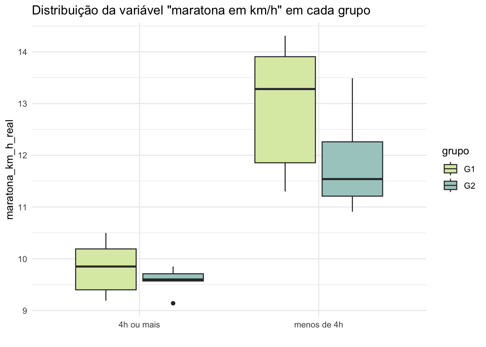
ggplot(data = dados) +
geom_boxplot(mapping = aes(x = maratona_menos_4h, y = tt_3_km_h_real, fill = grupo)) +
ggtitle('Distribuição da variável "Time trail de 21km - avaliação 3" em cada grupo')+
labs(y = "Time trail de 21km - avaliação 3 (km/h)")+
scale_fill_manual(values = c("G1" = "#DCEAB2", "G2" = "#A8CCC9"))+
theme_minimal()+
xlab("")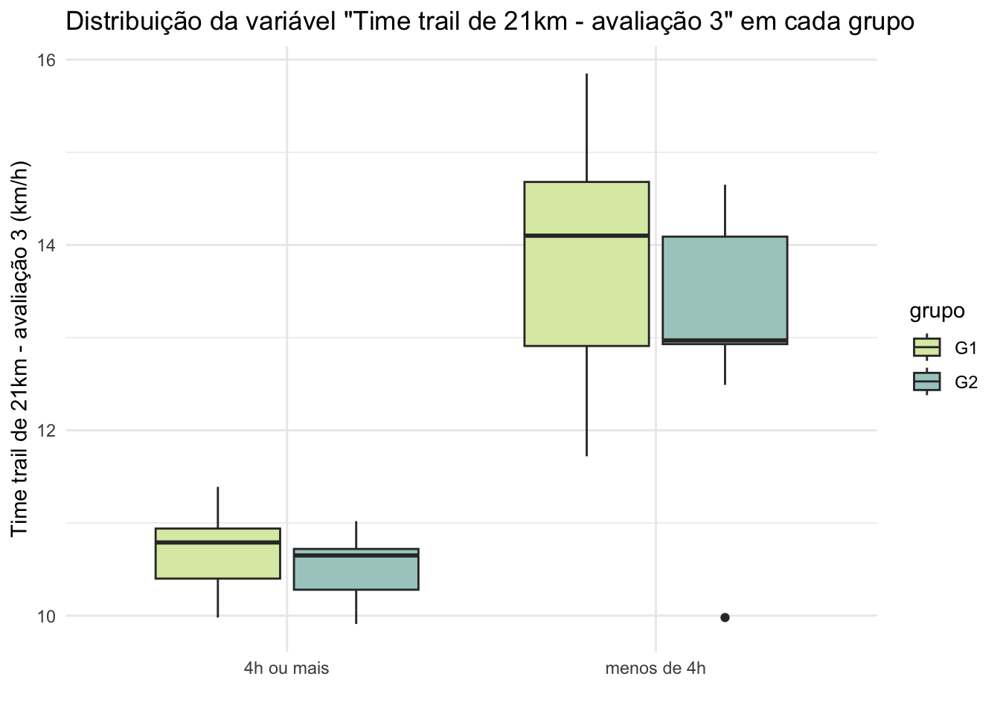
ggplot(data = dados) +
geom_boxplot(mapping = aes(x = maratona_menos_4h, y = tt_2_km_h_real, fill = grupo)) +
ggtitle('Distribuição da variável "Time trail de 21km - avaliação 2" em cada grupo')+
labs(y = "Time trail de 21km - avaliação 2 (km/h)")+
scale_fill_manual(values = c("G1" = "#DCEAB2", "G2" = "#A8CCC9"))+
theme_minimal()+
xlab("")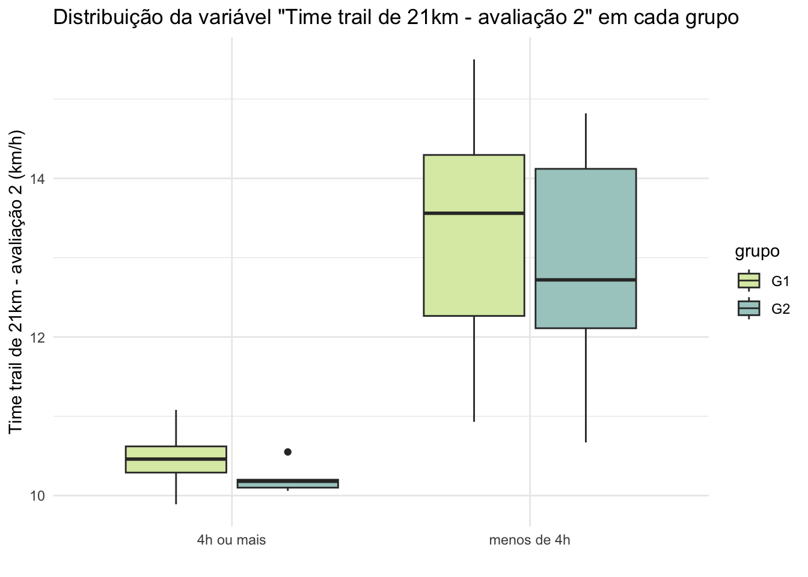
ggplot(data = dados) +
geom_boxplot(mapping = aes(x = maratona_menos_4h, y = tt_1_km_h_real, fill = grupo)) +
ggtitle('Distribuição da variável "Time trail de 21km - avaliação 1" em cada grupo')+
labs(y = "Time trail de 21km - avaliação 1 (km/h)")+
scale_fill_manual(values = c("G1" = "#DCEAB2", "G2" = "#A8CCC9"))+
theme_minimal()+
xlab("")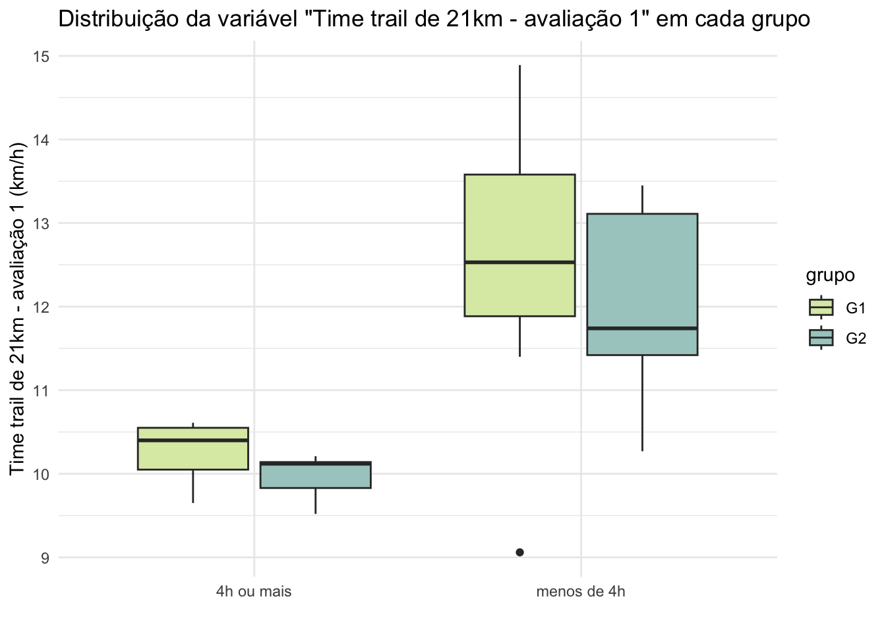
ggplot(data = dados) +
geom_boxplot(mapping = aes(x = maratona_menos_4h, y = z1_2_km_h_real, fill = grupo)) +
ggtitle('Distribuição da variável "21km em Z1 - avaliação 2" em cada grupo')+
labs(y = "21km em Z1 - avaliação 2 (km/h)")+
scale_fill_manual(values = c("G1" = "#DCEAB2", "G2" = "#A8CCC9"))+
theme_minimal()+
xlab("")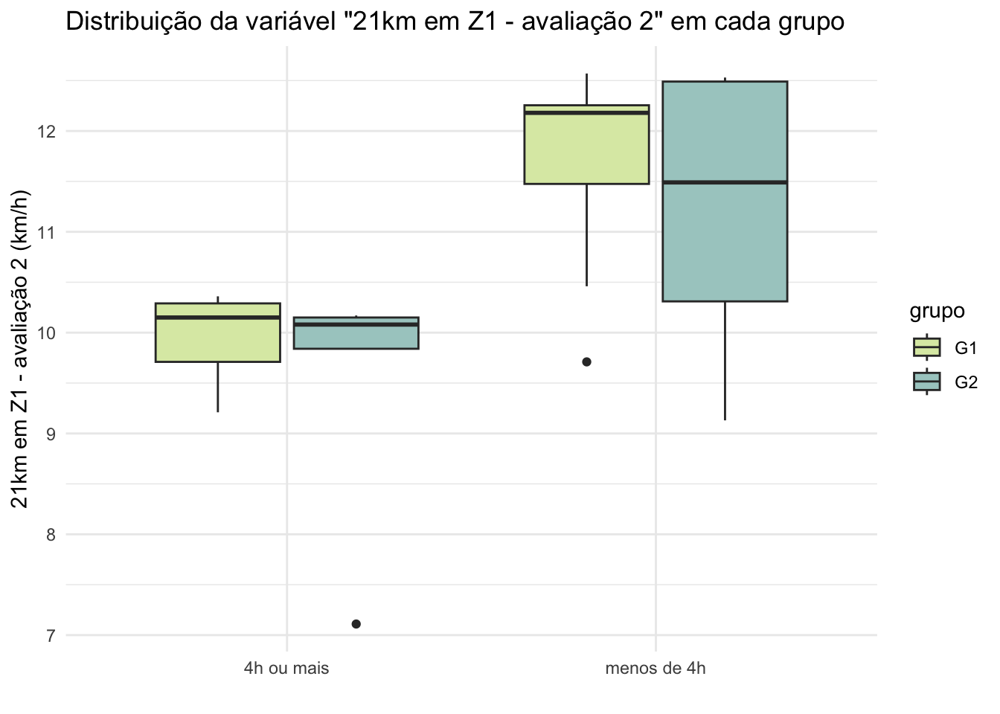
ggplot(data = dados) +
geom_boxplot(mapping = aes(x = maratona_menos_4h, y = z1_1_km_h_real, fill = grupo)) +
ggtitle('Distribuição da variável "21km em Z1 - avaliação 2" em cada grupo')+
labs(y = "21km em Z1 - avaliação 2 (km/h)")+
scale_fill_manual(values = c("G1" = "#DCEAB2", "G2" = "#A8CCC9"))+
theme_minimal()+
xlab("")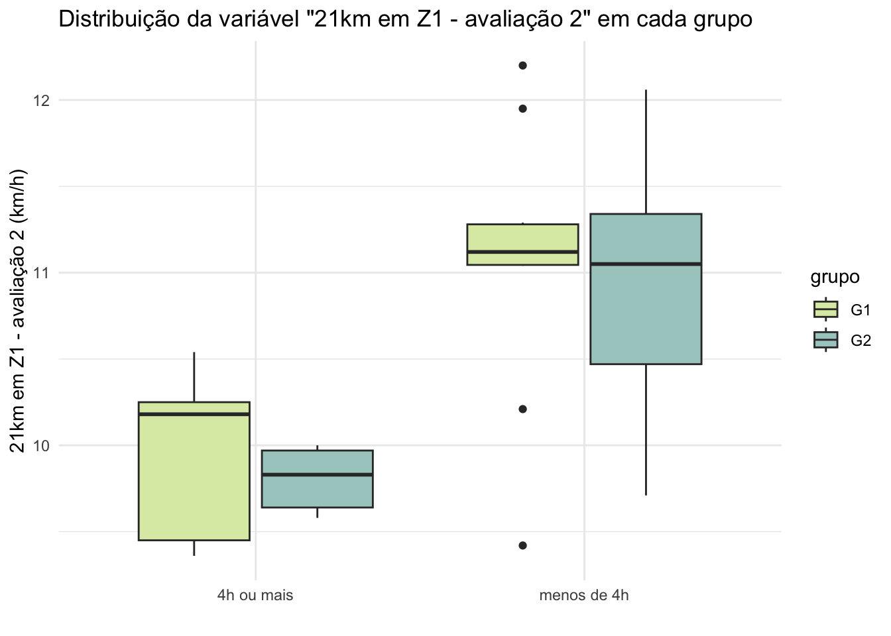
ggplot(data = dados) +
geom_boxplot(mapping = aes(x = maratona_menos_4h, y = t1000_s4_km_h, fill = grupo)) +
ggtitle('Distribuição da variável "Teste 1km - Semana 4" em cada grupo')+
labs(y = "Teste 1km - Semana 4 (km/h)")+
scale_fill_manual(values = c("G1" = "#DCEAB2", "G2" = "#A8CCC9"))+
theme_minimal()+
xlab("")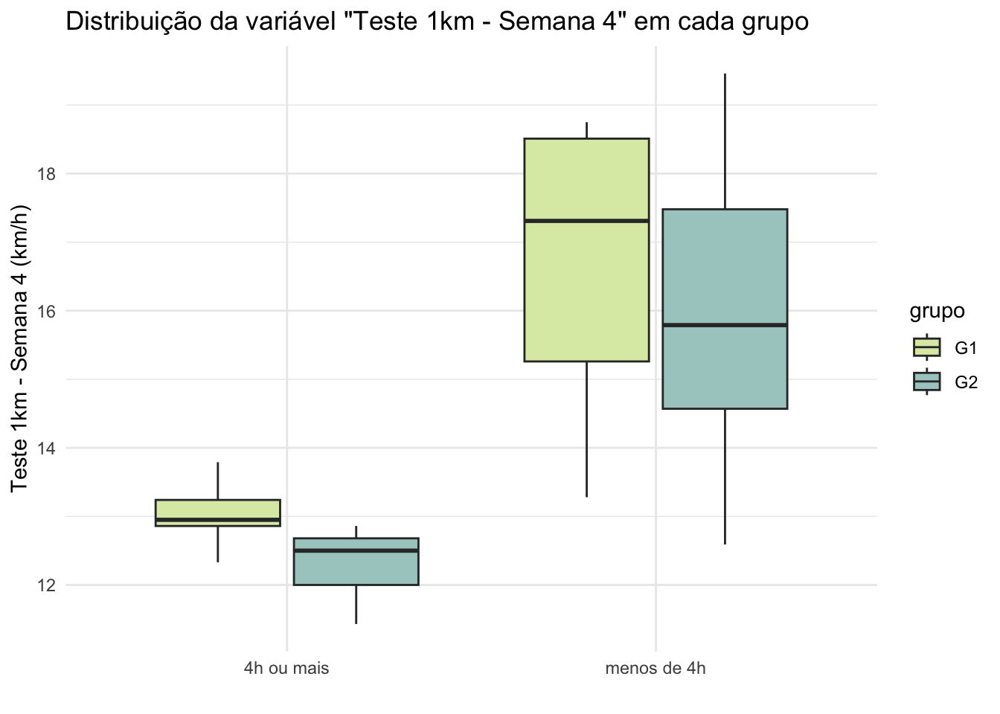
ggplot(data = dados) +
geom_boxplot(mapping = aes(x = maratona_menos_4h, y = t2000_s4_km_h, fill = grupo)) +
ggtitle('Distribuição da variável "Teste 2km - Semana 4" em cada grupo')+
labs(y = "Teste 2km - Semana 4 (km/h)")+
scale_fill_manual(values = c("G1" = "#DCEAB2", "G2" = "#A8CCC9"))+
theme_minimal()+
xlab("")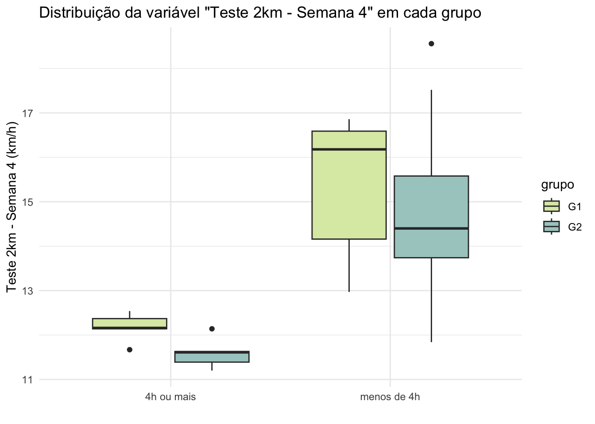
ggplot(data = dados) +
geom_boxplot(mapping = aes(x = maratona_menos_4h, y = t3000_s4_km_h, fill = grupo)) +
ggtitle('Distribuição da variável "Teste 3km - Semana 4" em cada grupo')+
labs(y = "Teste 3km - Semana 4 (km/h)")+
scale_fill_manual(values = c("G1" = "#DCEAB2", "G2" = "#A8CCC9"))+
theme_minimal()+
xlab("")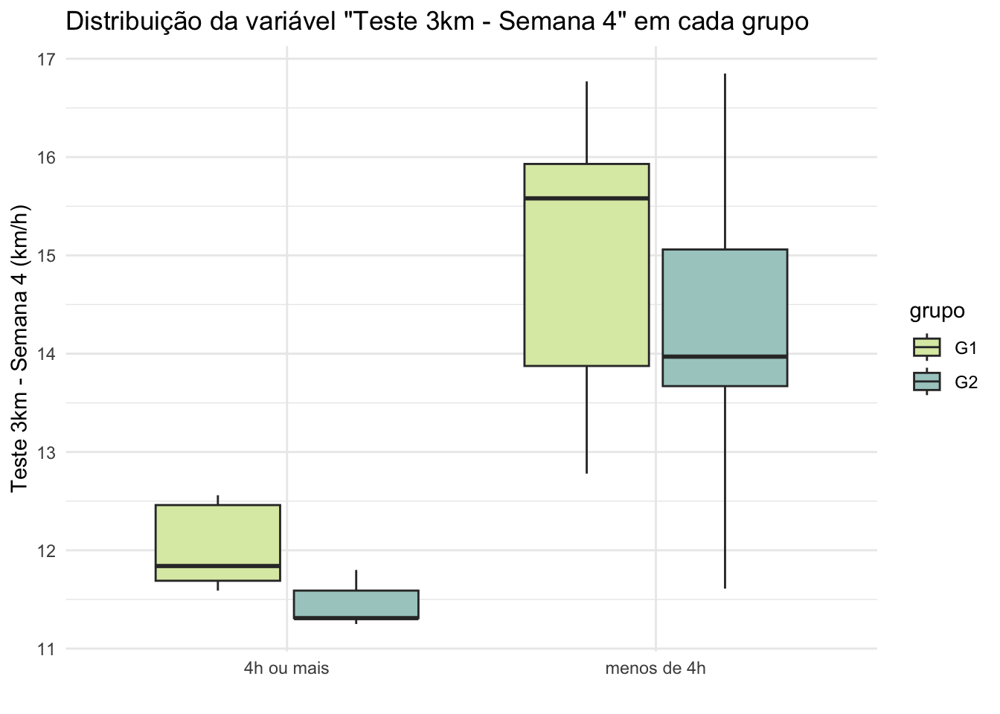
ggplot(data = dados) +
geom_boxplot(mapping = aes(x = maratona_menos_4h, y = vc_s4_real, fill = grupo)) +
ggtitle('Distribuição da variável "Velocidade crítica - Semana 4" em cada grupo')+
labs(y = "Velocidade crítica - Semana 4 (km/h)")+
scale_fill_manual(values = c("G1" = "#DCEAB2", "G2" = "#A8CCC9"))+
theme_minimal()+
xlab("")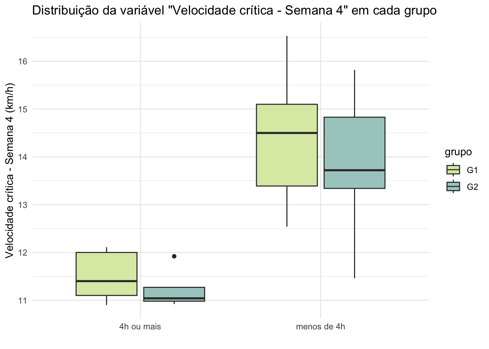
ggplot(data = dados) +
geom_boxplot(mapping = aes(x = maratona_menos_4h, y = d_s4_real, fill = grupo)) +
ggtitle("Distância máxima que pode ser percorrida acima da velocidade crítica - Semana 4")+
labs(y = "Distância (km/h)")+
scale_fill_manual(values = c("G1" = "#DCEAB2", "G2" = "#A8CCC9"))+
theme_minimal()+
xlab("")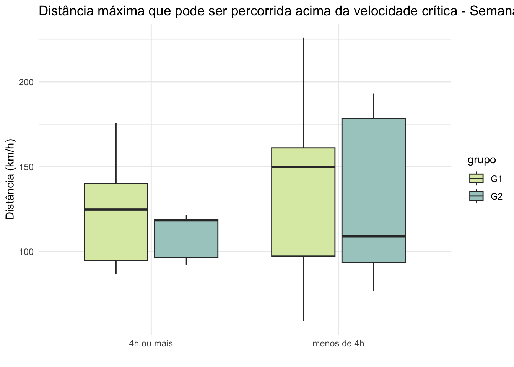
ggplot(data = dados) +
geom_boxplot(mapping = aes(x = maratona_menos_4h, y = r_s4, fill = grupo)) +
ggtitle("Distância máxima que pode ser percorrida acima da velocidade crítica - Semana 4")+
labs(y = "Distância (km/h)")+
scale_fill_manual(values = c("G1" = "#DCEAB2", "G2" = "#A8CCC9"))+
theme_minimal()+
xlab("")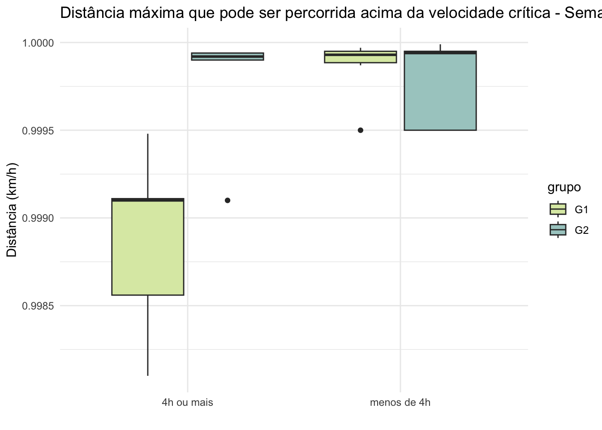
ggplot(data = dados) +
geom_boxplot(mapping = aes(x = maratona_menos_4h, y = t1000_s12_km_h, fill = grupo)) +
ggtitle('Distribuição da variável "Teste 1km - Semana 4" em cada grupo')+
labs(y = "Teste 1km - Semana 4 (km/h)")+
scale_fill_manual(values = c("G1" = "#DCEAB2", "G2" = "#A8CCC9"))+
theme_minimal()+
xlab("")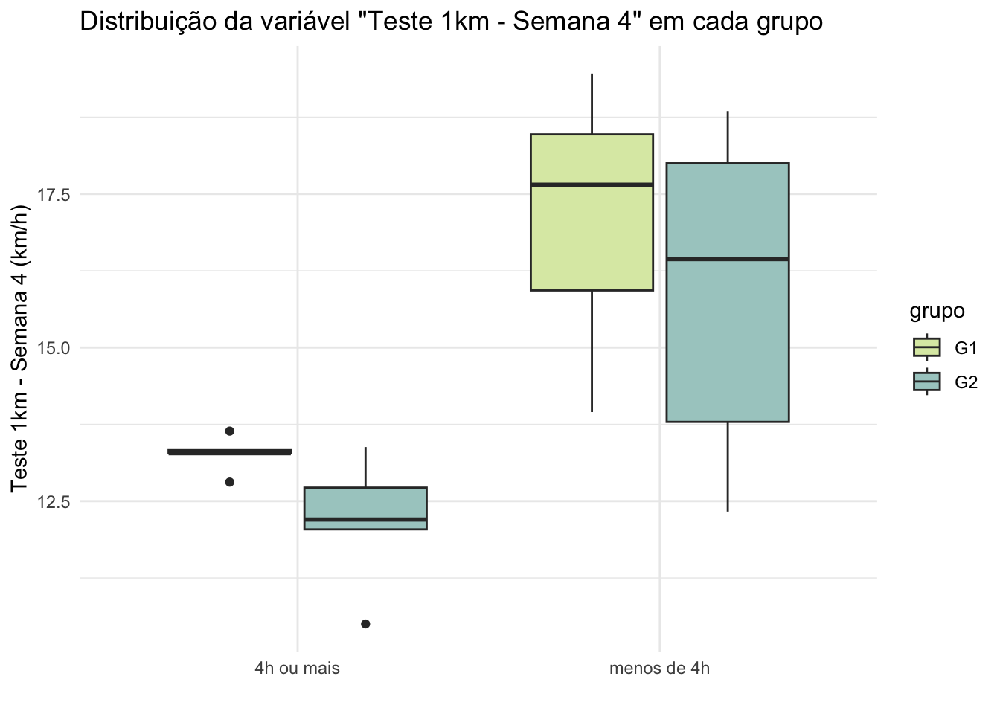
ggplot(data = dados) +
geom_boxplot(mapping = aes(x = maratona_menos_4h, y = t2000_s12_km_h, fill = grupo)) +
ggtitle('Distribuição da variável "Teste 2km - Semana 4" em cada grupo')+
labs(y = "Teste 2km - Semana 4 (km/h)")+
scale_fill_manual(values = c("G1" = "#DCEAB2", "G2" = "#A8CCC9"))+
theme_minimal()+
xlab("")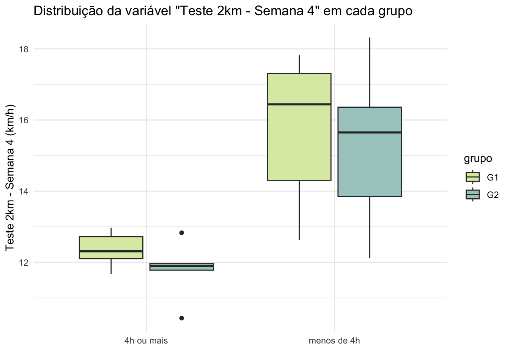
ggplot(data = dados) +
geom_boxplot(mapping = aes(x = maratona_menos_4h, y = t3000_s12_km_h, fill = grupo)) +
ggtitle('Distribuição da variável "Teste 3km - Semana 4" em cada grupo')+
labs(y = "Teste 3km - Semana 4 (km/h)")+
scale_fill_manual(values = c("G1" = "#DCEAB2", "G2" = "#A8CCC9"))+
theme_minimal()+
xlab("")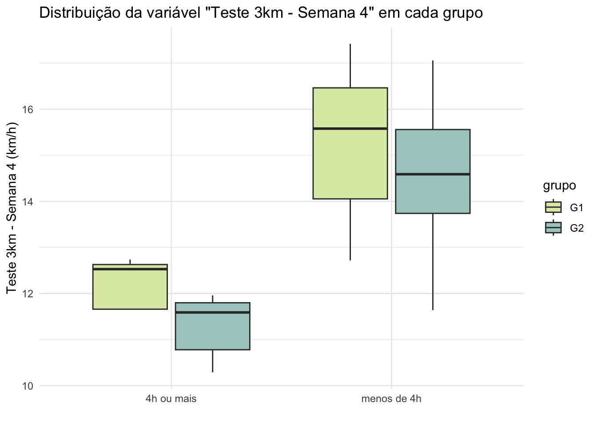
ggplot(data = dados) +
geom_boxplot(mapping = aes(x = maratona_menos_4h, y = vc_s12_real, fill = grupo)) +
ggtitle('Distribuição da variável "Velocidade crítica - Semana 4" em cada grupo')+
labs(y = "Velocidade crítica - Semana 4 (km/h)")+
scale_fill_manual(values = c("G1" = "#DCEAB2", "G2" = "#A8CCC9"))+
theme_minimal()+
xlab("")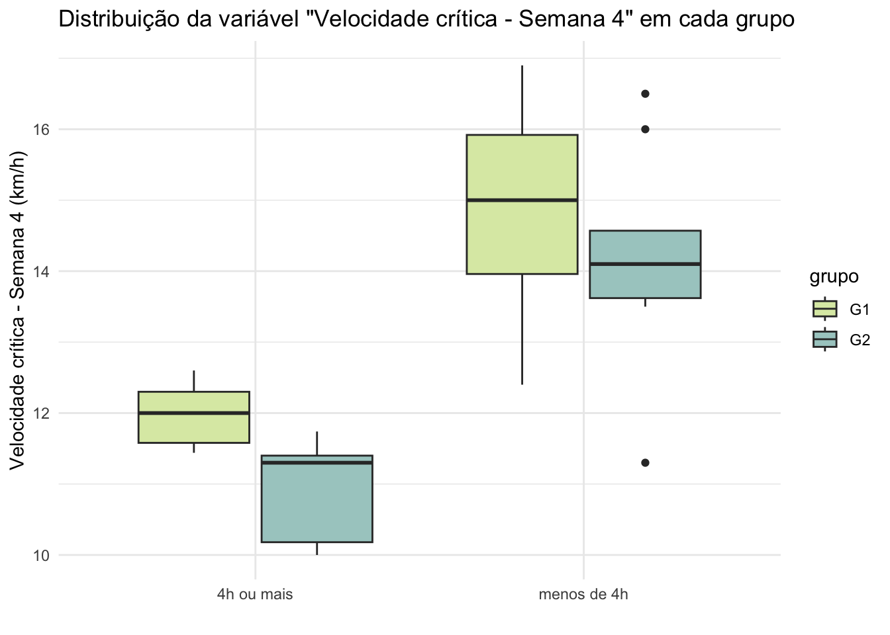
ggplot(data = dados) +
geom_boxplot(mapping = aes(x = maratona_menos_4h, y = d_s12_real, fill = grupo)) +
ggtitle("Distância máxima que pode ser percorrida acima da velocidade crítica - Semana 4")+
labs(y = "Distância (km/h)")+
scale_fill_manual(values = c("G1" = "#DCEAB2", "G2" = "#A8CCC9"))+
theme_minimal()+
xlab("")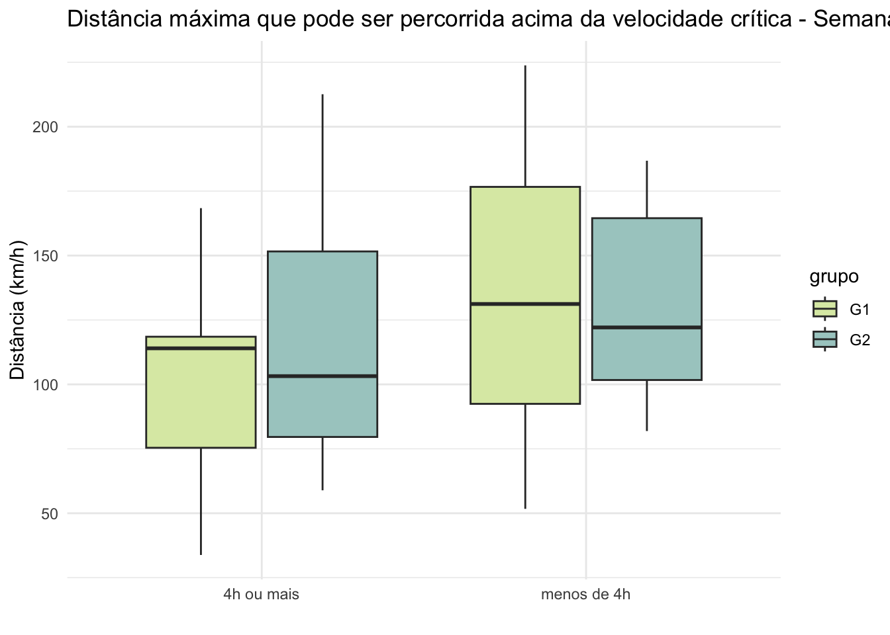
Número de variáveis qualitativas:
ncol(select_if(dados, is.character))[1] 32